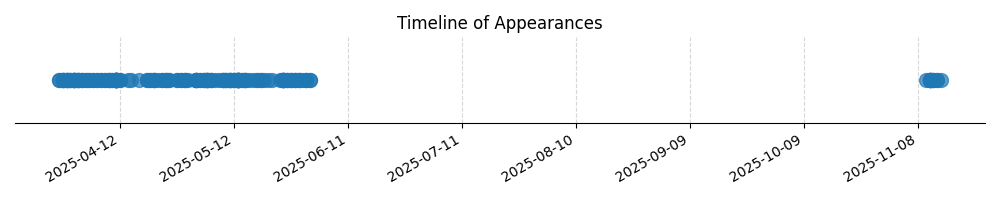

Kategorie: Navigace
Pilot provádí pravou zatáčku o náklonu 15° z kurzu 150°. Při náklonu 15° se rychlost zatáčení obvykle pohybuje kolem 3° za sekundu. Aby pilot dokončil zatáčku o 270° (což je standardní zatáčka pro změnu kurzu o 90° při použití pravidla 7650 pro předpoklad plného náklonu v zatáčce), potřebuje přibližně 90 sekund. Pilot musí začít srovnávat zatáčku tak, aby vylétl na nový kurz. Jelikož standardní výpočet změny kurzu v zatáčce s náklonem zohledňuje jak směrový obrat, tak čas potřebný k jeho provedení, a srovnání zatáčky z kurzu 150° do kurzu 270° (což je 120° směrový obrat) vyžaduje specifický bod pro její ukončení. V tomto případě, aby dosáhl kurzu 'W' (předpokládaný kurz 270° nebo severozápadní směr v tomto kontextu), musí srovnat zatáčku v bodě, který odpovídá tomuto kurzu. Při náklonu 15° je nutné začít srovnávat zatáčku o určitý počet stupňů dříve. Správná odpověď (C) 270° naznačuje, že pilot srovná zatáčku v tomto kurzu, což znamená, že v tomto okamžiku směřuje na 270°. Tento typ otázky spadá do navigace, konkrétně do výpočtu zatáček a udržování kurzu.

| Datum výskytu |
|---|
| 2025-11-14 |
| 2025-11-13 |
| 2025-11-12 |
| 2025-11-11 |
| 2025-11-10 |
| 2025-06-01 |
| 2025-05-31 |
| 2025-05-30 |
| 2025-05-29 |
| 2025-05-28 |
| 2025-05-27 |
| 2025-05-26 |
| 2025-05-25 |
| 2025-05-24 |
| 2025-05-22 |
| 2025-05-21 |
| 2025-05-20 |
| 2025-05-19 |
| 2025-05-18 |
| 2025-05-17 |
| 2025-05-16 |
| 2025-05-15 |
| 2025-05-14 |
| 2025-05-13 |
| 2025-05-12 |
| 2025-05-11 |
| 2025-05-10 |
| 2025-05-09 |
| 2025-05-08 |
| 2025-05-07 |
| 2025-05-06 |
| 2025-05-05 |
| 2025-05-04 |
| 2025-05-03 |
| 2025-05-02 |
| 2025-04-30 |
| 2025-04-29 |
| 2025-04-28 |
| 2025-04-27 |
| 2025-04-25 |
| 2025-04-24 |
| 2025-04-23 |
| 2025-04-22 |
| 2025-04-21 |
| 2025-04-20 |
| 2025-04-19 |
| 2025-04-17 |
| 2025-04-15 |
| 2025-04-14 |
| 2025-04-12 |
| 2025-04-11 |
| 2025-04-10 |
| 2025-04-09 |
| 2025-04-08 |
| 2025-04-07 |
| 2025-04-06 |
| 2025-04-05 |
| 2025-04-04 |
| 2025-04-03 |
| 2025-04-02 |
| 2025-04-01 |
| 2025-03-31 |
| 2025-03-30 |
| 2025-03-29 |
| 2025-03-28 |
| 2025-03-27 |